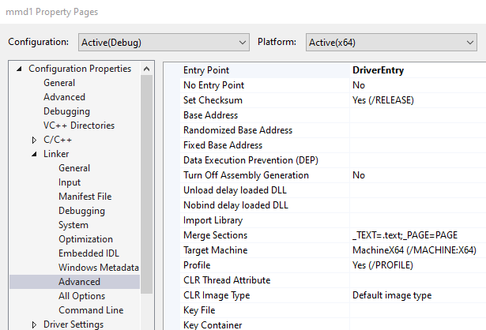
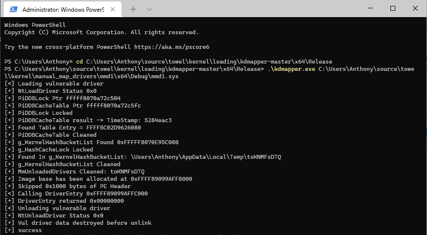

# Manually Mapped Driver Examples
## 1
In Linker > Advanced set the Entry Point to
DriverEntrySource:
•
https://github.com/hfiref0x/TDL/blob/master/Source/DummyDrv/dummy/main.cCan compile the driver as Debug or Release
#include <ntddk.h>
DRIVER_INITIALIZE DriverEntry;
#pragma alloc_text (INIT, DriverEntry)
// Dbg will only run if compiled in Debug mode
#if DBG
#define Dbg(...) DbgPrint("[mmd1] " __VA_ARGS__ )
#else
#define Dbg(...)
#endif
NTSTATUS DriverEntry(PDRIVER_OBJECT DriverObject, PUNICODE_STRING RegistryPath)
{
UNREFERENCED_PARAMETER(DriverObject); // No DriverObject because manual map
UNREFERENCED_PARAMETER(RegistryPath);
NTSTATUS status = 0;
Dbg("System range start @ 0x%p \n", MmSystemRangeStart);
Dbg("Driver mapped @ 0x%p \n", DriverEntry);
Dbg("Process ID: %lld \n", (DWORD64)PsGetCurrentProcessId());
return status;
}
Load with kdmapper
